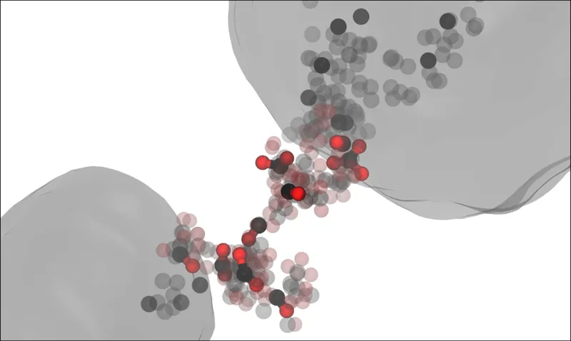
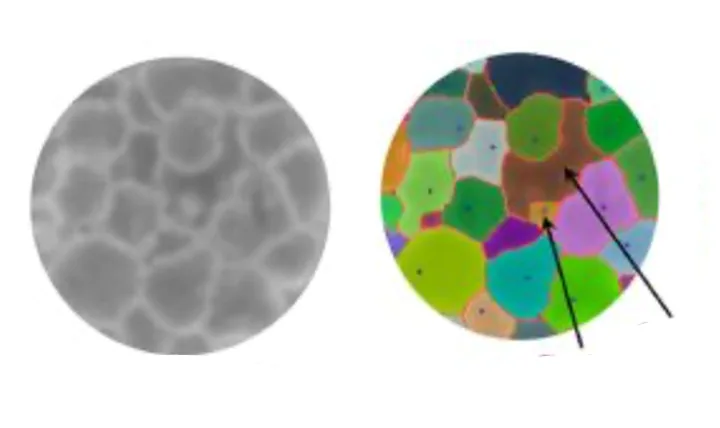

What we study
1How does chemistry govern material evolution under extreme conditions?
Extreme-condition events, in which material is subjected to thousands of kelvin and up to hundreds of GPa, occur naturally in planetary interiors, lightning strikes, cometary impacts, and explosions. Yet we have limited understanding of what happens at the level of individual atoms, because such conditions are hard to create and probe in the laboratory. These missing insights matter for additive manufacturing, shockwave materials synthesis, and explosives design.
We deploy our AI-driven simulation capability in systematic studies, building from single- to many-atom-type systems, to ask how chemical composition governs the condensed-phase thermochemistry that ensues in these events. [1, 2, 3]


2Exploiting those insights for in silico design of next-generation materials
Chemistry under extreme temperature, pressure, and strain rate has implications for advanced materials processing (laser ablation, sonication, electron-beam modification), detonation science, sustainable energy, and beyond — geology, astrophysics, and astrobiology. Simulations reveal the interplay between external stimuli and precursor that governs the resulting material, knowledge that can improve the efficiency and precision of these techniques. We combine AI-driven multiscale simulation and data science to advance these areas. [1, 2]
3An atomistically resolved view of multiscale reacting systems
Material and process optimization — for hydrogen storage, carbon sequestration, and catalysis — is often complicated by complex governing phenomena and massive design spaces. We accelerate these efforts with simulation-informed machine learning: simulations elucidate governing phenomena and identify regions of interest, and machine learning finds optimal solutions within the resulting design spaces. [1, 2]
Questions we’re asking include: What nucleation mechanism drives solution-phase perovskite synthesis? How are halogens distributed in mixed-halide perovskites, and how does that affect performance? In zeolite membranes, why do nanosheet galleries provide such good selectivity for ammonia synthesis, and can we enhance performance by fine-tuning nanosheet complexing?
Recent publications
- Equilibrium and Non-Equilibrium Effects in High Pressure Phase Transformations of CarbonCommun. Mater. 7, 206 (2026) · link
- Hierarchical Transfer Learning: An Agile and Equitable Strategy for Machine-Learning Interatomic Modelsnpj Comput. Mater. 12, 18 (2026) · link
- Cluster-Graph Fingerprinting: A Framework for Quantitative Analysis of Machine-Learned Interatomic Model Training and Simulation DataJ. Chem. Inf. Model. 66, 182–193 (2026) · link
- A Generalized Machine-Learning Framework for Developing Alchemical Many-Body Interaction Models for Polymer-Grafted NanoparticlesJ. Chem. Theory Comput. 21, 9853–9867 (2025) · link